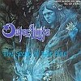

strange music page
jap's progre * * * outer limits
#アウターリミッツはkeyboardの塚本周正さんを中心としたグループで、ほぼすべての曲を塚本さんが作曲しています。MADE IN JAPAN RECORDの活動のきっかけにもなったグループで、１枚目なんかはかなり売れたようです。
曲的にはviolinが特徴的なシンフォニックなもので、やはりMADE IN JAPAN RECORDSを代表するような曲です。ファンタジックな内容は80年代に結構似たようなグループを生み出したようです、このへんが好き嫌いの別れるところかもしれないです。ただ、他のグループとは曲の完成度という所では大きく違います。ちなみにkeyboardの塚本さんはヴィエナのメンバーでも有ります。
- アウターリミッツ (outer limits)
- アタラクシア (ataraxia)
- オムニバス
#MADE IN JAPAN RECORDSから出た1枚目です。当時のインディーズでかなりの売り上げを記録したようです。ライヴなどでよくやる曲(リアルタイム世代でないので知らないのですが)などが入っているようです。MADE IN JAPAN RECORDSの本格的な出発点になったアルバムみたいです。後続のグループに比べてやはり曲とかがしっかりしています。特に、川口貴さんのバイオリンが印象的で良いです。
- Prelude
- Misty Moon
- 飽和溶液 (satulated solution)
- すべては風のように
- Spanish Labyrinth
- 塚本周正 (keyboards)
- 荒牧隆 (guitars on 2.3.5.)(bass on 1.4.5.)
- 上野知己 (vocals)(keyboards on 3.)
- 桜井信行 (drums,percussions)
- 川口貴 (violin)(guitars on 1.)
- 石川正 (bass on 2.3.)
MADE IN JAPAN RECORDS: MCD-2910
#drumsの桜井さんの発想によるコンセプトアルバム、ＣＤでは６曲目の笛の森がヴォーカル入りで収録されました。全体的にまとまった内容で一曲一曲の内容も良く、このアルバムがベストだと思います。
- 少年の不思議な角笛 (magical bugle horn)
夢の旅人 (the voice of wanderer)
出発 (Julius going to)
- 像の谷 (the silent valley)
- 雲の塔 (tower over the cloud)
- リリス (Liris)
- 古城 (out of the old castle)
- 影の映らない湖 (sail and the shadow)
- 笛の森 (whispering in the wind)
- 善悪を越えて (beyond good and evil)
- 塚本周正 (keyboards)
- 荒牧隆 (guitars,bass)
- 上野知己 (vocals,keyboards)
- 桜井信行 (drums,percussions)
- 川口貴 (violin)
KING RECORDS/CRIME: 280E-2053
#再結成記念再発アルバムみたいです。6曲目が追加収録かな？なんかJap's Progreの本のおまけCDについてた曲です。
たまーに、病気みたいにこの手のやつを聴きたくなります。フツーの所では売ってないので、普段はしばらくして諦めるんですが、今は
ミスターシリウスさんのInternet CD Shopというのが有って、この手のCDのほとんどを通販で買えてしまいます。んで、衝動買いしてしまいました。(1999.4.24)

- Marionette's Lament
- Mixer
- Platonic Syndrome
- Anti Podean
- The Scene of Pale Blue
- Pteridophyte
- 塚本周正 (keyboards)
- 荒牧隆 (guitars)
- 上野知己 (vocals)
- 桜井信行 (drums,percussions)
- 川口貴 (violin)
- 石川正 (bass)
MADE IN JAPAN RECORDS: MJC-1021 (original release 1987)
#ページェントと同じシリーズでクラウンから出ていた編集盤。レアかな？
- 少年の不思議な角笛
- 飽和溶液 (satulated solution ;new version)
- Misty moon
- Platonic Syndorome (live version)
- ペールブルーの情景 (the scene of pale blue)
- Marionett's Lament
- 善悪を越えて (beyond the evil and good)
- 塚本周正 (keyboards)
- 川口貴 (violin)
- 上野知己 (vocals)(keyboards on 3.)
- 荒牧隆 (guitars)(bass on 1.7.)
- 石川正 (bass on 2-6.)
- 桜井信行 (drums,percussions)
- 藤村幸宏 (chorus on 3.)
Crown/vice: ECD-1012 (1987)
#いろんなところから引っ張り出してきた音源をまとめたものです。やっぱりペールブルーの情景って良い曲だと思いました。
- Marionetts' Lament
- Misty Moon
- Platonic Syndorome
- ペールブルーの情景 (the scene of pale blue)
- アルジャーノンに花束を Part 2
- 塚本周正 (keybaords)
- 桜井信行 (drums,percussions)(vocals on 5.)
- 杉本正 (bass)(vocals on 2.4.)
- 川口貴 (violin)(vocals on 2.)
- 上野知己 (vocals on 1.)
- 上野Numero (acoustic guitars,chorus on 4.)
MARQUEE/BELLE ANTIQUE: BELLE-9462
#要するにジェネシスっぽいのですが、何かMade in Japanの嫌味な所がでてしまっているような感じで私は好きになれませんでした。特にvocalの声が駄目でした。全て英語で歌われているので、海外の駄目なポンプ系みたいにも聞こえました。女性ヴォーカルにして２曲目の路線に統一してくれれば好きになれたかもしれないです。なんて勝手な事ばっか言ってますけど。
- Adolescence of An Ancient Warrior
- Gabble
- A Low - Vatue Counting
- [ng] -Plug Cord II
- Against The Wind
Words by 小町明,村田秀明
Music by 村田秀明
- 村田秀明 (voice,bass)
- 大宮淳 (gutiars)
- 小町明 (keyboards)
- 沼田伸子 (keyboards)
- 松尾泰明 (drums)
MADE IN JAPAN RECORDS: MJC-1003
#いわゆるJap's Progre系の人々を一堂に集めた企画物。全体的にイタリアのシンフォみたいなアルバムになっています。宮武さんのfluteの曲と桜庭さん作曲の8曲目がとても良いです。
- 前奏曲 (prelude)
- アルジャーノンに花束を (fiori der Algernon part 2)
- 囁く花 (sospiri del fiore)
- 優美な狂気 (la dolce follia)
- Agilmente
- 間奏曲I (intermezzo i)
- Afferruoso
- Fragoroso
- 間奏曲II (intermezzo ii)
- 波紋 (onde)
- Anniversario
- 荒牧隆 (guitars)
- 杉本正 (bass,cello,contrabass)
- 川口貴 (violin)
- 宮武和広 (flute)
- 桜庭統 (piano)
- 杉本恭子 (piano,harpshichord)
- 林克彦 (organ,clavinet,mellotron)
- 上野知己 (hammond organ,mellotron)
- 桜井信行 (drums,percussions)
- 徳久恵美 (vocals)
- 塚本周正 (compose)
- 平山照継 (compose)
- 藤井卓 (compose)
KING RECORDS/CRIME: 292E-2081 (1989)